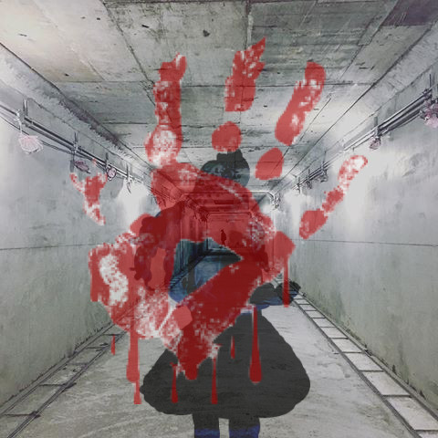

Things that happened in my dream
Where the dream took place
I can still remember the dream on the day August 25th of the year 2017; it is the strangest dream that I have never dream before.
Noticing that the night today is extraordinary dark and silent, which made me terrified; I did not think much and went to sleep at 11 p.m. as usual. Something strange happened....
Enter another space
~ Where am I ? ~ I asked myself, what replies me is silence. There is a wasteland right in front of my eyes, which located next to the sea. The entire abandoned amusement park is full of dust, damaged building, and tattered facility.
I have finally realized that I entered into another world that does not belong to me.
I quickly run away from the abandoned amusement park to the beach. On my halfway of thinking what should I do to get out of this weird place, suddenly, there is a sound behind my back. As I am about to turn around, I felt two people grab my arms, try to drag me into the building.
Attending a horror game

~Where am I? Again ?~ I asked myself as I wake up with my fainted head. It seems like I am in a gym with four big screens located in each corner which full of audience. As I look around, I realize that I am standing right in the middle of the gym with a bunch of people who ware the same shirt as me.
~ What is happening now?~ I ask the girl who stands next to me.
She looked at me with a frightened face and replied: ~We are now forced to play a horror game by those crazy people!!! ~
The rules of the game
 Now, I am confused. What game am I going to play? Who are those crazy people? What will happened to the people who lose? Thousand and thousand of question emerge in my brain.
Now, I am confused. What game am I going to play? Who are those crazy people? What will happened to the people who lose? Thousand and thousand of question emerge in my brain.
Suddenly, an announcement is declared: You are now attending a game, every one of you has to try hard to win. The cheater will get the punishment, which is going to make you suffer. Every one of you will be sent into a tremendous maze located in the jungle. The people who can walk out through the maze safely will become the winner. We are going to provide some weapons for each of you, so try hard to win and never cheat!
The game start
After the announcement, there is about five big truck come to take us to the maze. I was terrified and feeling nervous that I could not even stop thinking it for a second. They put me in front of the entrance of the maze. I am carrying a long pointed rod used as a weapon and try to have a mental accommodation.
~The game start!~ I said to myself; then I bravely ran into the jungle.
Hard to escape
The maze is full of trees and darkness, there are so many dangerous creature and barrier, and they almost killed me. ~This is impossible to win! I am going to find a safe place and hide.~ I cried.
Bathroom full of blood
 I found an old house full of garbage and broken furniture. I decide to hide in the bathroom. There is a sound approaching, and it is getting closer and closer. I am so scared that I decide to kill myself before anybody or any creatures found me. I killed myself, and the bathroom is full of my blood.
I found an old house full of garbage and broken furniture. I decide to hide in the bathroom. There is a sound approaching, and it is getting closer and closer. I am so scared that I decide to kill myself before anybody or any creatures found me. I killed myself, and the bathroom is full of my blood.
My soul and my body falls apart
I felt a force try to drag me up from the ground. I wake up without any pain as if I did not hurt myself. I saw my bloody body lying on the ground. I found out that I can pass through every barrier and creatures, because they could not see me. I successfully get out from the jungle with my soul.
My special ability as being a ghost
 I hated the people who put me into this game. I hate the people who tried to kill me and put all of the innocent people into the danger. I am going to revenge. As this thought come out from my brain, the magical thing happened: all the villain died and their body exploded. The world become peaceful and safe.
I hated the people who put me into this game. I hate the people who tried to kill me and put all of the innocent people into the danger. I am going to revenge. As this thought come out from my brain, the magical thing happened: all the villain died and their body exploded. The world become peaceful and safe.
Wake up from my dream
After that, I wake up from the dream. I found myself on the bed, and my forehead is full of sweat. ~It was a dream ~ I realized.